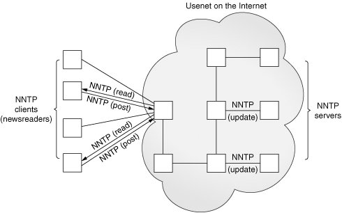

17.3. Network News17.3.1. Usenet and NewsgroupsThe Usenet News System is a global archival "bulletin board." There are newsgroups for just about any topic, from poems to politics, linguistics to computer languages, software to hardware, planting to cooking, finding or announcing employment opportunities, music and magic, breaking up or finding love. Newsgroups can be general and worldwide or targeted toward a specific geographic region. The entire system is a large global network of computers that participate in sharing Usenet postings. Once a user uploads a message to his or her local Usenet computer, it will then be propagated to other adjoining Usenet computers, and then to the neighbors of those systems, until it's gone around the world and everyone has received the posting. Postings will live on Usenet for a finite period of time, either dictated by a Usenet system administrator or the posting itself via an expiration date/time. Each system has a list of newsgroups that it "subscribes" to and only accepts postings of interestnot all newsgroups may be archived on a server. Usenet news service is dependent on which provider you use. Many are open to the public while others only allow access to specific users, such as paying subscribers, or students of a particular university, etc. A login and password are optional, configurable by the Usenet system administrator. The ability to post or download-only is another parameter configurable by the administrator. 17.3.2. Network News Transfer Protocol (NNTP)The method by which users can download newsgroup postings or "articles" or perhaps post new articles is called the Network News Transfer Protocol (NNTP). It was authored by Brian Kantor (UC San Diego) and Phil Lapsley (UC Berkeley) in RFC 977, published in February 1986. The protocol has since then been updated in RFC 2980, published in October 2000. As another example of client/server architecture, NNTP operates in a fashion similar to FTP; however, it is much simpler. Rather than having a whole set of different port numbers for logging in, data, and control, NNTP uses only one standard port for communication, 119. You give the server a request, and it responds appropriately, as shown in Figure 17-2. Figure 17-2. NNTP Clients and Servers on the Internet. Clients mostly read news but may also post. Articles are then distributed as servers update each other. 17.3.3. Python and NNTPBased on your experience with Python and FTP above, you can probably guess that there is an nntplib and an nntplib.NNTP class that you need to instantiate, and you would be right. As with FTP, all we need to do is to import that Python module and make the appropriate calls in Python. So let us review the protocol briefly:
Look somewhat familiar? It should, because it's practically a carbon copy of the FTP protocol. The only change is that the login step is optional, depending on how an NNTP server is configured. Here is some Python pseudocode to get started: from nntplib import NNTP n = NNTP('your.nntp.server') r,c,f,l,g = n.group('comp.lang.python') ... n.quit() Typically, once you log in, you will choose a newsgroup of interest and call the group() method. It returns the server reply, a count of the number of articles, the ID of the first and last articles, and superfluously, the group name again. Once you have this information, you will then perform some sort of action such as scroll through and browse articles, download entire postings (headers and body of article), or perhaps post an article. Before we take a look at a real example, let's introduce some of the more popular methods of the nntplib.NNTP class. 17.3.4. nntplib.NNTP Class MethodsAs in the previous section outlining the ftplib.FTP class methods, we will not show you all methods of nntplib.NNTP, just the ones you need in order to create an NNTP client application. As with the FTP objects table in the previous segment, there are more NNTP object methods not described here. To avoid clutter, we list only the ones we think you would most likely use. For the rest, we again refer you to the Python Library Reference. 17.3.5. Interactive NNTP ExampleHere is an interactive example of how to use Python's NNTP library. It should look similar to the interactive FTP example. (The e-mail addresses have been changed for privacy reasons.) When connecting to a group, you get a 5-tuple back from the group() method as described in Table 17.2.
>>> from nntplib import NNTP >>> n = NNTP('your.nntp.server') >>> rsp, ct, fst, lst, grp = n.group('comp.lang.python') >>> rsp, anum, mid, data = n.article('110457') >>> for eachLine in data: ... print eachLine From:"Alex Martelli" <alex@...> Subject: Re: Rounding Question Date: Wed, 21 Feb 2001 17:05:36 +0100 "Remco Gerlich" <remco@...> wrote: > Jacob Kaplan-Moss <jacob@...> wrote in comp.lang.python: >> So I've got a number between 40 and 130 that I want to round up to >> the nearest 10. That is: >> >> 40 --> 40, 41 --> 50, ..., 49 --> 50, 50 --> 50, 51 --> 60 >> Rounding like this is the same as adding 5 to the number and then > rounding down. Rounding down is substracting the remainder if you were > to divide by 10, for which we use the % operator in Python. This will work if you use +9 in each case rather than +5 (note that he doesn't really want rounding -- he wants 41 to 'round' to 50, for ex). Alex >>> n.quit() '205 closing connection - goodbye!' >>> 17.3.6. Client Program NNTP ExampleFor our NNTP client example, we are going to try to be more adventurous. It will be similar to the FTP client example in that we are going to download the latest of somethingthis time it will be the latest article available in the Python language newsgroup, comp.lang.python. Once we have it, we will display (up to) the first 20 lines in the article, and on top of that, (up to) the first 20 meaningful lines of the article. By that, we mean lines of real data, not quoted text (which begin with ">" or "|") or even quoted text introductions like "In article <...>, soAndSo@some.domain wrote:". Finally, we are going to do blank lines intelligently. We will display one blank line when we see one in the article, but if there are more than one consecutive blank, we only show the first blank line of the set. Only lines with real data are counted toward the "first 20 lines," so it is possible to display a maximum of 39 lines of output, 20 real lines of data interleaved with 19 blank ones. If no errors occur when we run our script, we may see something like this: $ getLatestNNTP.py
*** Connected to host "your.nntp.server"
*** Found newsgroup "comp.lang.python"
*** Found last article (#471526):
From: "Gerard Flanagan" <grflanagan@...>
Subject: Re: Generate a sequence of random numbers that sum up to 1?
Date: Sat Apr 22 10:48:20 CEST 2006
*** First (<= 20) meaningful lines:
def partition(N=5):
vals = sorted( random.random() for _ in range(2*N) )
vals = [0] + vals + [1]
for j in range(2*N+1):
yield vals[j:j+2]
deltas = [ x[1]-x[0] for x in partition() ]
print deltas
print sum(deltas)
[0.10271966686994982, 0.13826576491042208, 0.064146913555132801,
0.11906452454467387, 0.10501198456091299, 0.011732423830768779,
0.11785369256442912, 0.065927165520102249, 0.098351305878176198,
0.077786747076205365, 0.099139810689226726]
1.0
$Example 17.2. NNTP Download Example (getFirstNNTP.py)
This output is given the original newsgroup posting, which looks like this: From: "Gerard Flanagan" <grflanagan@...>
Subject: Re: Generate a sequence of random numbers that sum up to 1?
Date: Sat Apr 22 10:48:20 CEST 2006
Groups: comp.lang.python
Gerard Flanagan wrote:
> Anthony Liu wrote:
> > I am at my wit's end.
> > I want to generate a certain number of random numbers.
> > This is easy, I can repeatedly do uniform(0, 1) for
> > example.
> > But, I want the random numbers just generated sum up
> > to 1 .
> > I am not sure how to do this. Any idea? Thanks.
> --------------------------------------------------------------
> import random
> def partition(start=0,stop=1,eps=5):
> d = stop - start
> vals = [ start + d * random.random() for _ in range(2*eps) ]
> vals = [start] + vals + [stop]
> vals.sort()
> return vals
> P = partition()
> intervals = [ P[i:i+2] for i in range(len(P)-1) ]
> deltas = [ x[1] - x[0] for x in intervals ]
> print deltas
> print sum(deltas)
> ---------------------------------------------------------------
def partition(N=5):
vals = sorted( random.random() for _ in range(2*N) )
vals = [0] + vals + [1]
for j in range(2*N+1):
yield vals[j:j+2]
deltas = [ x[1]-x[0] for x in partition() ]
print deltas
print sum(deltas)
[0.10271966686994982, 0.13826576491042208, 0.064146913555132801,
0.11906452454467387, 0.10501198456091299, 0.011732423830768779,
0.11785369256442912, 0.065927165520102249, 0.098351305878176198,
0.077786747076205365, 0.099139810689226726]
1.0Of course, the output will always be different since articles are always being posted. No two executions will result in the same output unless your news server has not been updated with another article since you last ran the script. Line-by-Line ExplanationLines 19This application starts with a few import statements and some constants, much like the FTP client example. Lines 1140In the first section, we attempt to connect to the NNTP host server and bail if it tails (lines 13-24). Line 15 is commented out deliberately in case your server requires authentication (with login and password)if so, uncomment this line and edit it in with line 14. This is followed by trying to load up the specific newsgroup. Again, it will quit if that newsgroup does not exist, is not archived by this server, or if authentication is required (lines 26-40). Lines 4255In the next part we get some headers to display (lines 42-51). The ones that have the most meaning are the author, subject, and date. This data is retrieved and displayed to the user. Each call to the xhdr() method requires us to give the range of articles to extract the headers from. We are only interested in a single message, so the range is "X-X" where X is the last message number. xhdr() returns a 2-tuple consisting of a server response (rsp) and a list of the headers in the range we specify. Since we are only requesting this information for one message (the last one), we just take the first element of the list (hdr [0]). That data item is a 2-tuple consisting of the article number and the data string. Since we already know the article number (because we give it in our range request), we are only interested in the second item, the data string (hdr [0][1] ). The last part is to download the body of the article itself (lines 53-55). It consists of a call to the body() method, a display the first 20 or fewer meaningful lines (as defined at the beginning of this section), a logout of the server, and complete execution. Lines 5780The core piece of processing is done by the displayFirst20() function (lines 57-80). It takes the set of lines making up the article body and does some preprocessing like setting our counter to 0, creating a generator expression that lazily iterates through our (possibly large) set of lines making up the body, and "pretends" that we have just seen and displayed a blank line (more on this later; lines 59-61). When we strip the line of data, we only remove the trailing whitespace (rstrip()) because leading spaces may be intended lines of Python code. One criterion we have is that we should not show any quoted text or quoted text introductions. That is what the big if statement is for on lines 65-71 (also include line 64). We do this checking if the line is not blank (line 63). We lowercase the line so that our comparisons are case-insensitive (line 64). If a line begins with ">" or "|," it means it is usually a quote. We make an exception for lines that start with ">>>" since it may be an interactive interpreter line, although this does introduce a flaw that a triply-old message (one quoted three times for the fourth responder) is displayed. (One of the exercises at the end of the chapter is to remove this flaw.) Lines that begin with "in article ...", and/or end with "writes:" or "wrote:", both with trailing colons ( : ), are also quoted text introductions. We skip all these with the continue statement. Now to address the blank lines. We want our application to be smart. It should show blank lines as seen in the article, but it should be smart about it. If there is more than one blank line consecutively, only show the first one so the user does not see unnecessarily excessive lines, scrolling useful information off the screen. We should also not count any blank lines in our set of 20 meaningful lines. All of these requirements are taken care of in lines 72-78. The if statement on line 72 says to only display the line if the last line was not blank, or if the last line was blank but now we have a non-blank line. In other words, if we fall through and we print the current line, it is because it is either a line with data or a blank line as long as the previous line was not blank. Now the other tricky part: if we have a non-blank line, count it and set the lastBlank flag to False since this line was not empty (lines 74-76). Otherwise, we have just seen a blank line so set the flag to true. Now back to the business on line 61 ... we set the lastBlank flag to true because if the first real (non-introductory or quoted) line of the body is a blank, we do not want to display it ... we want to show the first real data line! Finally, if we have seen 20 non-blank lines, then we quit and discard the remaining lines (lines 79-80). Otherwise we would have exhausted all the lines and the for loop terminates normally. 17.3.7. Miscellaneous NNTPYou can read more about NNTP in the NNTP Protocol Definition/Specification (RFC 977) at ftp://ftp.isi.edu/in-notes/rfc977.txt as well as on the http://www.networksorcery.com/enp/protocol/nntp.htm Web page. Other related RFCs include 1036 and 2980. To find out more about Python's NNTP support, you can start here: http://python.org/docs/current/lib/module-nntplib.html. |